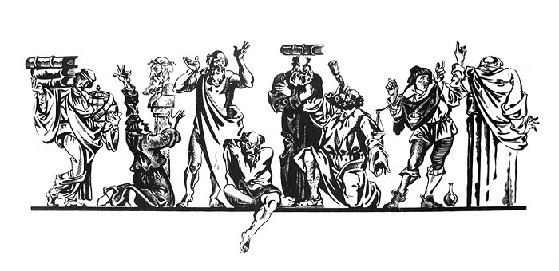

Sed utcumque ferendum si tantum ad publica munia forent onoi pros luran, nisi ad omnem prorsus vitæ functionem nihil essent dexteriores. Ad convivium adhibe sapientem, aut tristi silentio, aut molestis quæstiunculis obturbabit. Ad chorum advoca, camelum saltare dices. Ad publicos ludos trahe, ipso vultu populi voluptatibus obstabit et cogetur e theatro migrare sapiens Cato, quandoquidem supercilium non potest ponere. In colloquium inciderit, repente lupus in fabula. Si quid emendum, si contrahendum, breviter, si quid eorum agendum, sine quibus hæc quotidiana vita transigi non potest, stipiteml dicas sapientem istum, non hominem. Usque adeo neque sibi, neque patriæ, neque suis usquam usui esse potest, propterea quod communium rerum sit imperitus, et a populari opinione, vulgaribusque institutis longe lateque discrepet. Qua quidem ex re odium quoque consequatur necessum est, nimirum, ob tantam vitæ atque animorum dissimilitudinem. Quid enim omnino geritur inter mortales non stultitiæ plenum, idque a stultis, et apud stultos? Quod si quis unus universis velit obstrepere, huic ego suaserim, ut Timonem imitatus, in solitudinem aliquam demigret, atque ibi solus sua fruatur sapientia.
